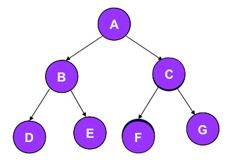
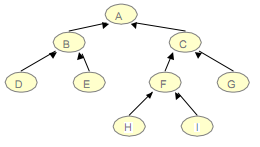

Pregunta Verdadero-Falso Pregunta 1 Un árbol binario es una estructura de datos en la cual cada nodo puede tener un subnodo izquierdo y un subnodo derecho. Verdadero Falso Retroalimentación Verdadero
Pregunta de Elección Múltiple Pregunta Los tipos de recorridos de un árbol son: Respuestas Opción 1 raiz, nodo, subnodo Opción 2 inicio, desarrollo, final Opción 3 preorden, inorden, postorden Opción 4 maxima longitud, minima longitud Retroalimentación Incorrecto Incorrecto Opción correcta Incorrecto Solución Incorrecto (Retroalimentación) Incorrecto (Retroalimentación) Opción correcta (Retroalimentación) Incorrecto (Retroalimentación)
Pregunta de Elección Múltiple Pregunta Observe el grafico. Que tipo de recorrido es:  Recorrido: A B D E C F G Respuestas Opción 1 Inorden Opción 2 Preorden Opción 3 Postorden Retroalimentación Incorrecto Opción correcta Incorrecto Solución Incorrecto (Retroalimentación) Opción correcta (Retroalimentación) Incorrecto (Retroalimentación)
Pregunta Observe el grafico. Que tipo de recorrido es: Recorrido: G D H I E B K J F C A Respuestas Opción 1 Postorden Opción 2 Inorden Opción 3 Preorden Retroalimentación Opción correcta Incorrecto Incorrecto Solución Opción correcta (Retroalimentación) Incorrecto (Retroalimentación) Incorrecto (Retroalimentación)
Pregunta de Elección Múltiple Pregunta Analice el siguiente grafico  ¿Cual es recorrido inorden del grafico anterior? Respuestas Opción 1 D B E A H F I C G Opción 2 A B D E C F H I G Opción 3 D E B H I F G C A Opción 4 B D E A H F I G C Retroalimentación Opción correcta Incorrecto Incorrecto Incorrecto Solución Opción correcta (Retroalimentación) Incorrecto (Retroalimentación) Incorrecto (Retroalimentación) Incorrecto (Retroalimentación)